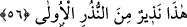
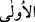
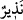

haksızlık eden milletin ardı kesildi. Âlemlerin Rabb’i olan Allah’a hamdolsun.”
(el-En’am 6/457) buyurmuştur. Rasûlullah (s.a.) da Bedir Gazvesi’nde Ebû Cehil’i başı
kesilmiş olarak gördüğü zaman şükür secdesinde bulunmuştur.
et-Te’vilâtü’n-Necmiyye’de der ki: “Bu âyet, Allah Teâlâ’nın sayıp “âlâ” olarak
isimlendirdiği, mev’ıze, evlilik, şüphe ve cedelden uzaklaşma gibi pek çok nimete karşı
bolca şükretmenin gerekliliğine ve nimetlerin şükre müstehak olduğuna işâret
etmektedir. Nebi (s.a.)’in tüm ümmetine şâmil olması için âyetteki hitap ümmetin her bir
ferdi için geçerlidir. Nitekim bu hususta: “İbrahim Allah’ı birleyerek O’na itâat
eden” (en-Nahl 16/120) buyrulmuştur.”
Âyetin mânâsı şöyledir: “Ey Muhammed! Bu zikrolunanları öğrendiğinde rabbinin
nimetlerinden hangisinin Allah’ın indinden olmadığı veya onun nimet mahiyetinde
bulunmadığını ileri sürerek kuşku duyabilirsin? Diğer bir ifâdeyle, Rabbinizin
nimetlerinden hangisinden şüphe eder ve bu konuda mücadeleye girişirsiniz? Nasıl
senin kardeşlerin sayılan geçmiş peygamberlere ve o peygamberlerin dostlarına nusret
verilip düşmanları helâk edildiyse sana da bunu ihsân edeceğim. O halde bu Mekke
toplumundan görmüş olduğun ısrar, inâd ve tekebbürden dolayı kalbin darlık ve
sıkıntıya gark olmasın!”
56. İşte bu ilk uyarıcılardan bir uyarıcıdır.
Âyetteki “nezîr”den maksad ya “Kur’ân-ı Kerim”dir ki bu takdirde kelime masdar
anlamında olup mânâsı “Bu müşâhede ettiğiniz Kur’ân, âkıbetlerini işittiğiniz geçmiş
(ümmetlere) yapılan uyarılar kabilinden bir uyarıdır” şeklinde olur. Ya da kasdedilen
“Rasûl” (s.a.)’dir ki böyle bir takdirde de söz konusu kelime “münzir” (uyarıcı)
anlamına gelir. Âyetin tefsiri şu şekilde olur: “Bu Rasûl (s.a.) geçmiş uyarıcılar
cinsinden bir uyarıcıdır” mahiyetini arz eder. (__WORD__) kelimesi ise fâsılalara riâyet için
getirilmiş olan topluluk mânâsında bir kelimedir. Yâni bu kelime ile “uyarılan (önceki)
kavimlerin ahvalini sizlere bildirdi” denmek istenmiştir.
et-Te’vilâtü’n-Necmiyye’de der ki: “(__WORD__) kelimesi Kur’an veya Rasûl (s.a.)’e işâret
eder. Bu ikisinin inzarı, geçmiş kitap ve evvelki rasullerin inzarına benzetilmiştir.”
Fakir [Bursevî] der ki: Bu âyette Nebi (s.a.)’in kemâle ermiş vârislerine işâret vardır.
Zira sonra gelen her uyarıcı basîret üzere olup kelamlarında ve Allah’a dâvetlerinde
aynı tevhîdde müttefik olduklarından bunlar da ilk uyarıcılar kabilinden sayılabilir. Aynı
şekilde bu vârislere de asırları ve meşrepleri hasebince uyarılar ilham olunmaktadır.
Onlara tâbi olanlara ne mutlu! Muhalefet edenlere de ne yazık!
Doğru bildiğin faydalı sözü,